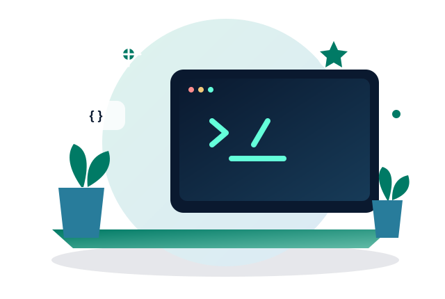

BELAJAR · BERKARYA · BERTUMBUHIde hebat dimulai
Ide hebat dimulai
dari rasa ingin tahu.
Jelajahi misi coding, temukan ide kreatif, dan bangun karyamu satu langkah demi satu langkah.
Jelajahi sesi
PETA PETUALANGAN
Materi tersedia 1Pilih misi belajarmu
Setiap sesi punya tantangan dan karya yang berbeda.
Menyiapkan petualangan...